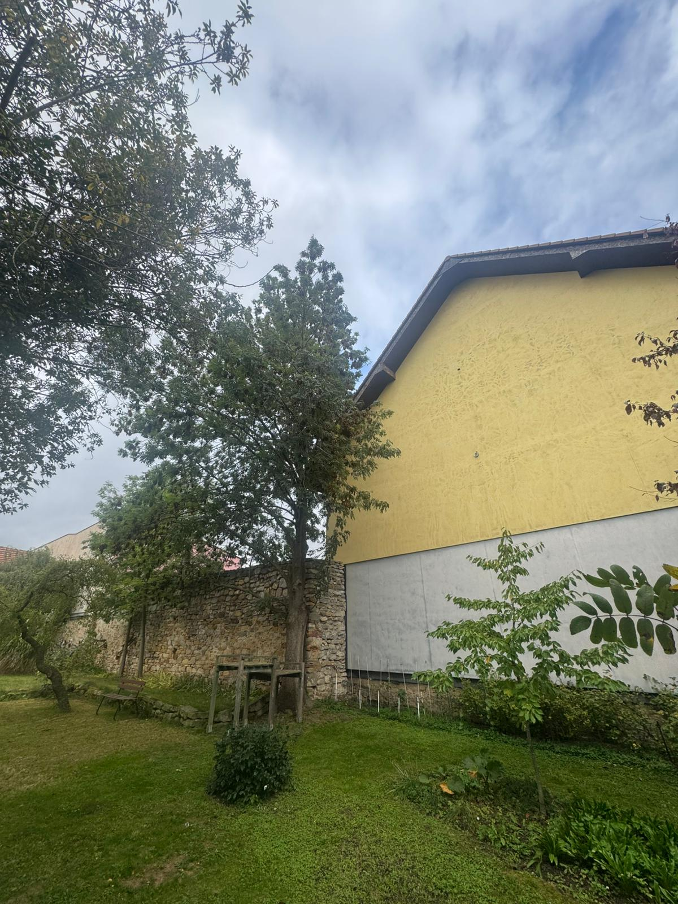
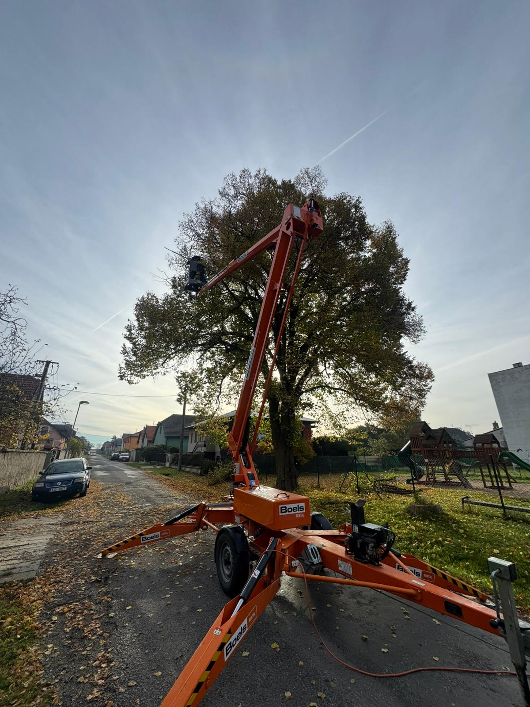
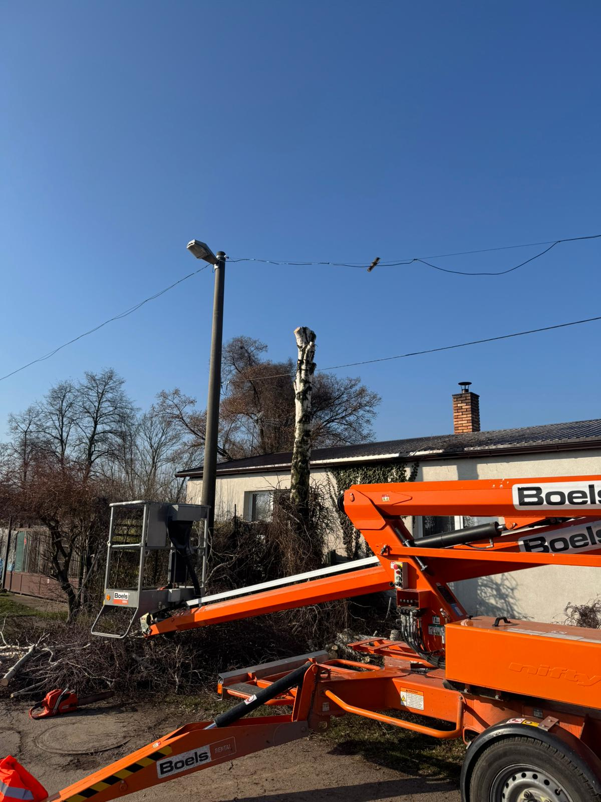
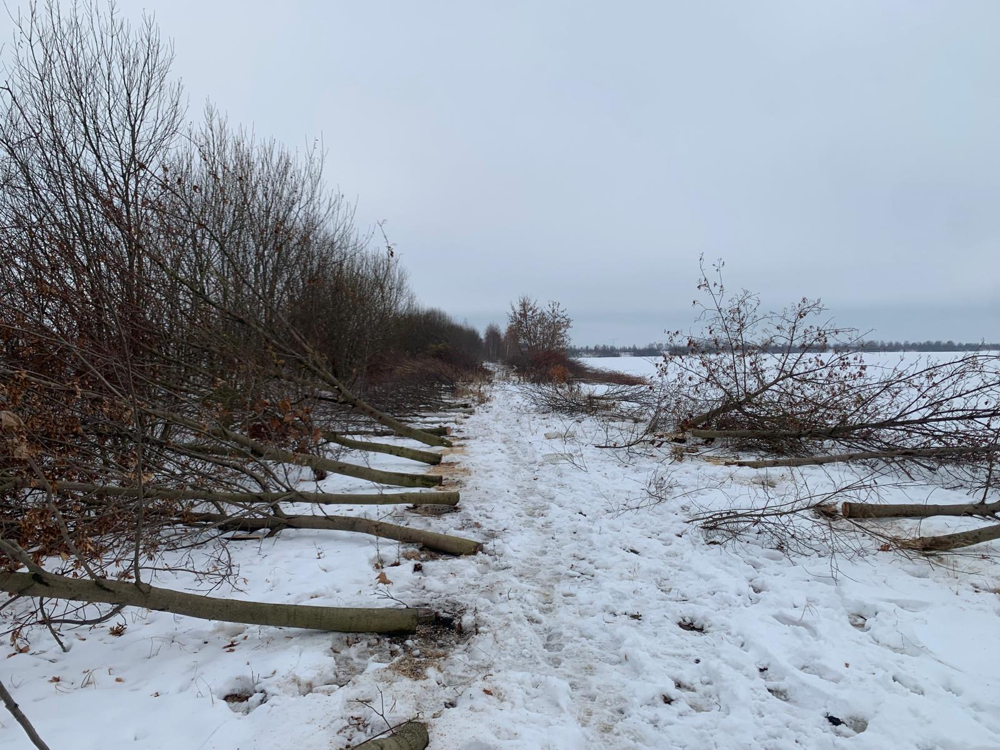
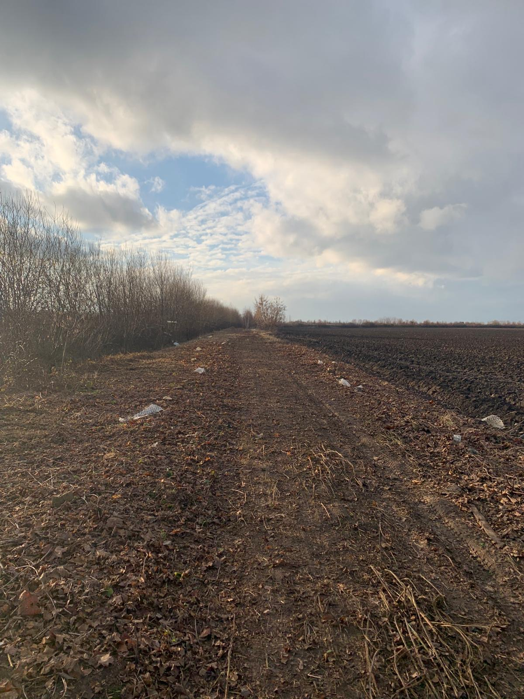
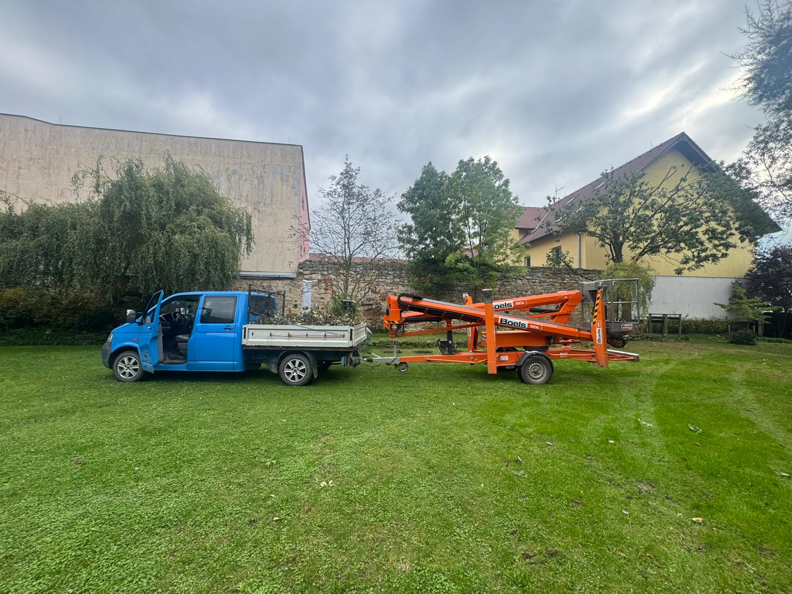
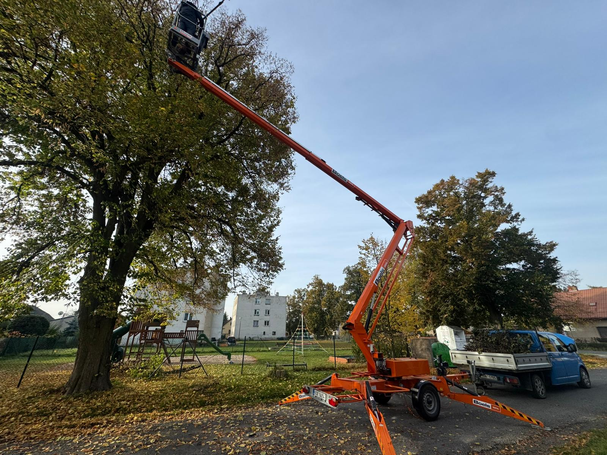

↗
Projektujeme a realizujeme zahrady s citem pro přírodu. Každý projekt je jedinečný.


Každý projekt začínáme pečlivou analýzou prostoru. Navrhujeme zahrady, kde se geometrická přesnost potkává s organickou krásou přírody.
Pečlivá analýza prostoru, půdy a vašich představ. Návrh zahrady přesně na míru s ohledem na světelné podmínky a požadovanou údržbu.
Precizní provedení s důrazem na detail. Kvalitní materiály, odborná výsadba a vlastní strojový park bez externích dodavatelů.
Dlouhodobá sezónní údržba. Poradenství a podpora pro zdravou zahradu po celý rok — od jarních příprav po zimní řez.
Každý projekt je unikátní kompozice navržená na míru danému prostoru a majiteli. Listujte galerií a najděte inspiraci pro svou zahradu.










 Před
Po
Před
Po
 Před
Po
Před
Po
Komplexní služby zahradní architektury — od prvotního návrhu přes výsadbu a kácení až po dlouhodobou péči o vaši zahradu.
Architektonický přístup k návrhu zahrady. Analýza prostoru, půdy a světelných podmínek.
Kompletní realizace od přípravy terénu přes výsadbu až po finální úpravy.
Pravidelná sezónní údržba — sekání, stříhání, hnojení, vertikutace a celkový servis.
Nízkoúdržbové štěrkové plochy s precizním obrubníkovým lemem a kompozicí dřevin.
Design a realizace okolí bazénů — od dlažby přes štěrkové přechody až po osázení zelení.
Kácení stromů včetně práce z plošiny. Bezpečné odstranění nežádoucích dřevin s odvozem dřeva a větví.


Tipy, postřehy a know-how z praxe. Sezónní rady pro péči o zahradu, výběr rostlin a údržbu trávníku.
Pravidelná údržba není jen o sečení. Sdílíme s vámi osvědčený plán péče o trávník napříč sezónou — od jarní vertikutace přes letní zálivku až po podzimní hnojení. Vše tak, aby vaše zahrada vypadala dobře i v období extrémního sucha.
Číst celý článek →Vegetační klid od listopadu do března je ideální pro většinu zásahů. Vysvětlujeme, proč zima zjednodušuje práci a co řešit s městským úřadem.
Od přípravy podloží přes geotextilii až po finální výběr okrasného štěrku. Návod, jak založit nízkoúdržbový záhon, který bude krásný roky.
Projekt okolí bazénu se neobejde bez plánu. Vodicí linie, materiály, drenáže a osvětlení — vše, co byste měli zvážit ještě před začátkem prací.
Krásný a hustý trávník není věc náhody. Je výsledkem promyšleného plánu, který kombinuje správný výběr osiva, pravidelnou údržbu a respekt k sezónním potřebám trávy. V tomto článku shrnujeme, co se nám v praxi na desítkách realizací osvědčilo, a jak připravit svůj trávník na stále teplejší a sušší letní měsíce.
Začneme tím, že většina chyb, které se v létě „projeví“ jako žluté skvrny a prořídlé plochy, vznikne už v březnu a dubnu. Pokud na jaře zanedbáte vertikutaci, plsť pod travním drnem zadrží vlhkost na povrchu a kořeny zůstanou mělké. V létě pak takový trávník vyschne při prvním delším horku.
V praxi doporučujeme tento jarní postup:
Když přijdou tropické dny, pravidla se mění. Trávník nesekejte nakrátko. Vyšší stéblo (8–10 cm) chrání kořeny před přehřátím a zadržuje v půdě více vlhkosti. Pokud jezdíte sekačkou s mulčovacím nožem, vracíte navíc do trávníku přírodní hnojivo v podobě jemně nasekané hmoty.
„V suchém létě raději sečte výš a méně často. Stresujete trávu mnohem méně než při intenzivním krátkém sečení každý víkend.“
Zálivka by měla být vydatná, ale méně častá. Krátká povrchová zálivka jen probudí houbové choroby a kořeny zůstanou nahoře. Pravidlo, které funguje: jednou za 5–7 dní 25–35 litrů na metr čtvereční, ideálně brzy ráno.
Co uděláte v září a říjnu, vrátí se vám příští rok. Podzimní hnojení s vyšším obsahem draslíku posílí kořeny před zimou. Sběr listí brání zaplísnění a poslední sečení (na výšku 5 cm) připraví trávník na klidové období.
V opravdu suchých obdobích je v pořádku, když trávník na pár týdnů zežloutne. Tráva má vyvinutý mechanismus dormance — uschne, ale kořeny zůstanou živé. Po prvním vydatnějším dešti regeneruje sama. Důležité je v této fázi nesekat a nepoužívat hnojiva.
Všechny tyto zásahy provádíme v rámci našich servisních smluv pro klienty z Prahy a Středočeského kraje. Disponujeme vlastním strojovým parkem (mulčovač s traktorem, profesionální sekačky, vertikutátor, aerifikátor), takže nepotřebujeme externí dodavatele a můžeme garantovat termíny i kvalitu provedení.
Pokud uvažujete o pravidelné péči o váš trávník nebo potřebujete jednorázový zásah (jarní úprava, podzimní příprava na zimu, regenerace po suchu), ozvěte se nám — domluvíme nezávaznou konzultaci přímo u vás.
Konzultace na vašem pozemku je zdarma a nezávazná. Přijedeme, posoudíme prostor a sepíšeme nabídku na míru.
Pracujeme po celém Středočeském kraji a Praze. Pro projekty mimo region nás kontaktujte — domluvíme individuální podmínky.